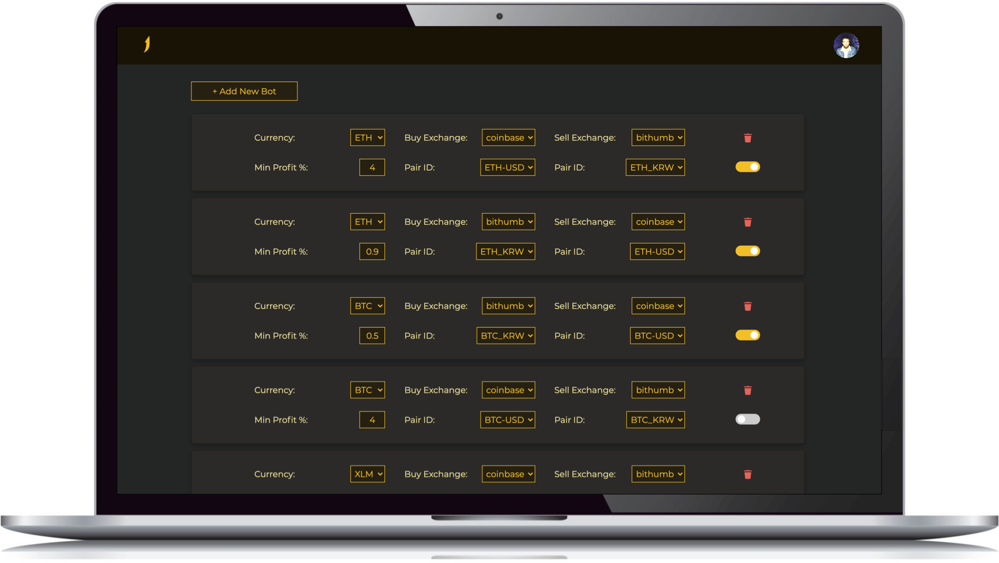
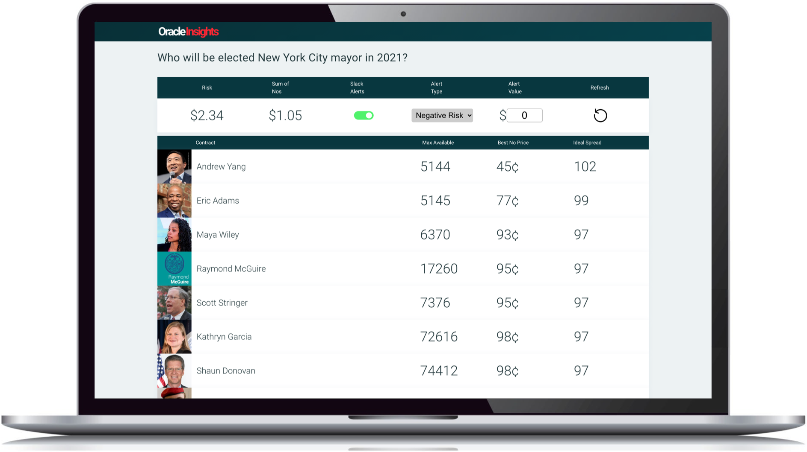

Trading Platforms
Trading Platforms
Summary
I built two propietary trading platforms from the ground up. Both platforms make it easy to automate trading and configure alerts.
38North is a trading platform for identifying arbitrage opportunities and automating trading strategies between multiple cryptocurrency exchanges. It was originally built to take advantage of the 'Kimchi Premium' between US and South Korean exchanges.

Oracle Insights is and application for analyzing and automating trading on Predictit. It allows for easy configuration of volitility and arbitrage alerts.

Stack
- React
- Typescript
- Emotion
- Webpack
- Babel
- Eslint
- MongoDB
- Express
- Node.js
- NGINX
- JWT
- Google OAuth